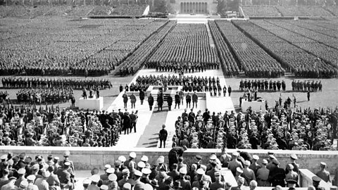
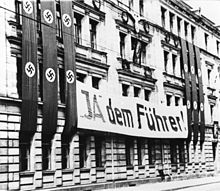
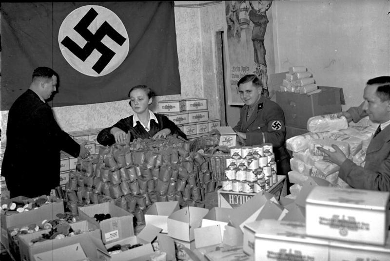

Todo sobre ritualismo y ceremonias Nazis
Como ya mencionado tenemos a la Esvastica
El ritualismo y las ceremonias dentro del régimen nazi desempeñaron un papel crucial en la construcción de la identidad y la cohesión del movimiento, así como en la propagación de la ideología nazi entre sus seguidores. Estas ceremonias estaban diseñadas para evocar emociones intensas, promover la lealtad al partido y al Führer (Adolf Hitler), y crear un sentido de comunidad entre los miembros del partido y la población en general.

Aquí hay algunos aspectos importantes sobre el ritualismo y las ceremonias nazis:
1-Nuremberg Rally: Uno de los ejemplos más destacados de ceremonias nazis fue el Rally de Nuremberg, que se llevaba a cabo anualmente en la ciudad de Nuremberg, Alemania, desde 1923 hasta 1938. Estos rallies masivos congregaban a cientos de miles de personas y eran cuidadosamente coreografiados para exaltar la ideología nazi, la figura de Hitler y la grandeza del estado nazi.
2-Simbolismo y Escenografía: Las ceremonias nazis estaban cargadas de simbolismo y escenografía cuidadosamente planificada. Se utilizaron banderas, estandartes, emblemas y otros símbolos nazis para crear una atmósfera de poder y unidad. Los discursos de Hitler y otros líderes nazis también eran una parte integral de estas ceremonias, sirviendo para inspirar fervor y devoción entre la multitud.

3-Culto a la personalidad: Las ceremonias nazis contribuyeron al culto a la personalidad que rodeaba a Hitler. Las imágenes y los rituales enfatizaban la figura de Hitler como un líder carismático y providencial, y se le presentaba como la encarnación de la voluntad y el destino del pueblo alemán.
4-Eventos conmemorativos y rituales de lealtad: Además de los grandes rallies, también se llevaron a cabo otros eventos ceremoniales, como conmemoraciones de los caídos en la Primera Guerra Mundial, ceremonias de iniciación para los jóvenes en las Juventudes Hitlerianas y rituales de lealtad en las unidades de las SS.

5-Celebraciones estacionales: Algunas festividades y celebraciones nazis estaban inspiradas en antiguas tradiciones germánicas y nórdicas relacionadas con la naturaleza y el ciclo de las estaciones. Por ejemplo, el solsticio de verano (Sonnwendfeier) y el solsticio de invierno (Yule) fueron celebraciones que los nazis intentaron revivir y reinterpretar a través de la lente de la mitología nórdica.
